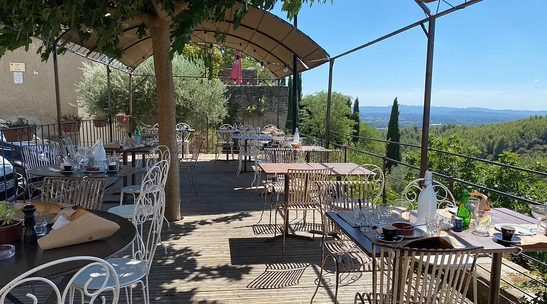
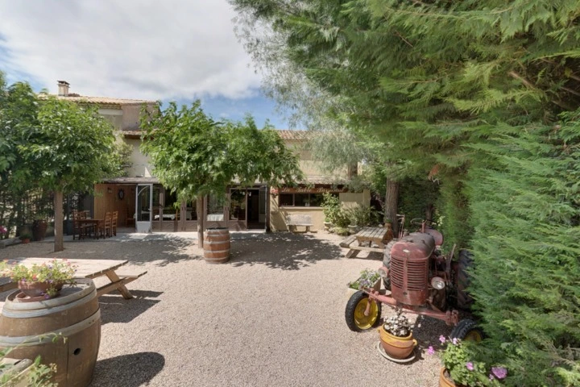
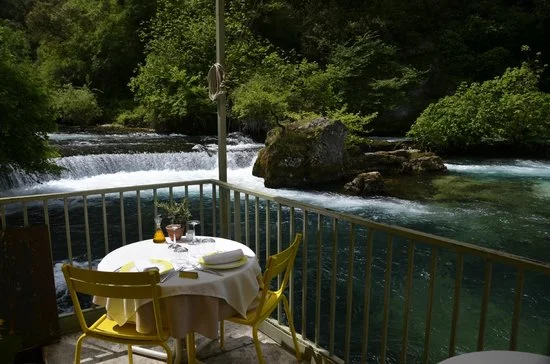
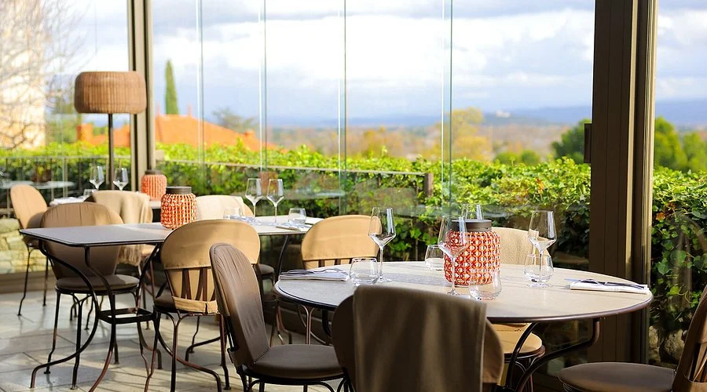
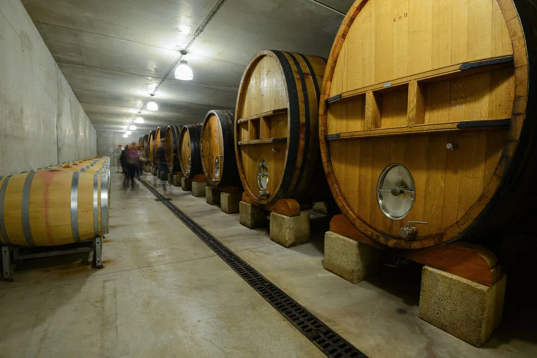
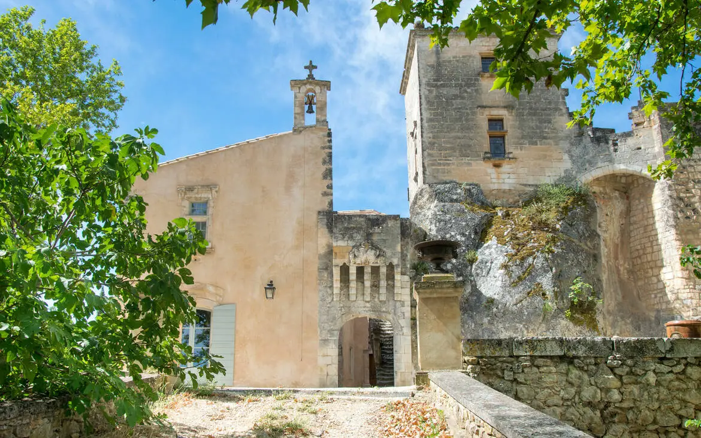
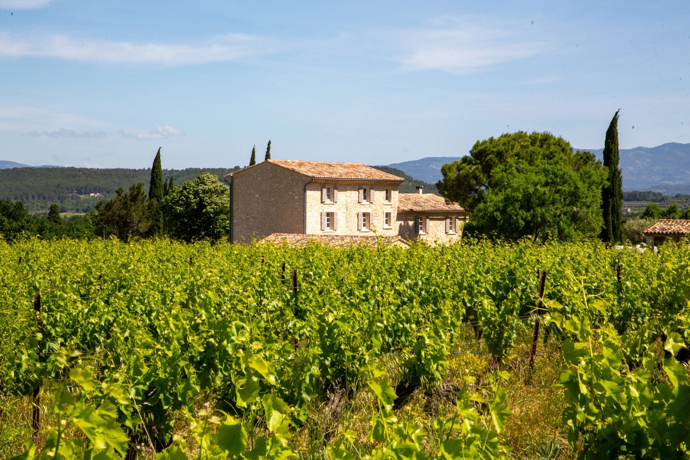

Le Haut Perché
Situé à Saumane-de-Vaucluse, ce restaurant offre une cuisine raffinée dans un cadre exceptionnel dominant la vallée.
Une sélection de restaurants et domaines viticoles pour découvrir la richesse gastronomique et viticole de la Provence.

Situé à Saumane-de-Vaucluse, ce restaurant offre une cuisine raffinée dans un cadre exceptionnel dominant la vallée.

Au Thor, cette adresse met à l'honneur les producteurs locaux et les saveurs authentiques de saison.

À Fontaine-de-Vaucluse, profitez d'une cuisine élégante dans un environnement naturel exceptionnel.

Une adresse incontournable à Châteauneuf-de-Gadagne, alliant créativité et produits du terroir.

L'une des références historiques de Châteauneuf-du-Pape, reconnue pour la qualité de ses vins.

Un domaine familial produisant des vins élégants au cœur de Châteauneuf-du-Pape.

Le plus ancien domaine viticole du Luberon, alliant patrimoine et savoir-faire.

Un vignoble confidentiel du Ventoux proposant des dégustations dans un cadre privilégié.